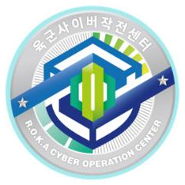
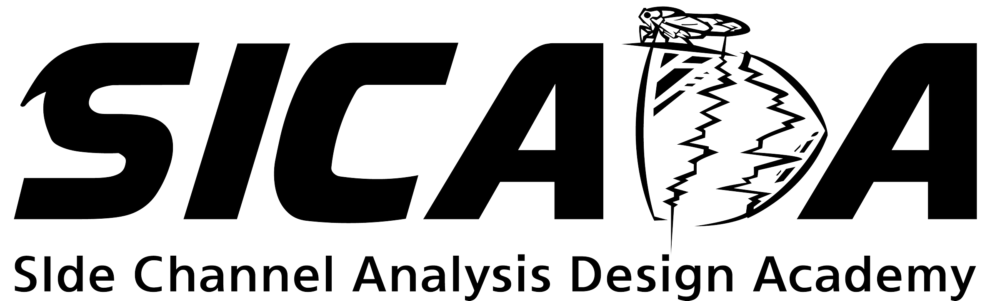

3D 프린터 취약점 점검
[BoB Team Project | Team 싹3D]
국내 3D 프린터 기업 제품의 보안 취약점 점검 및 실무 보안 가이드라인 제공.
- 제품 역공학 및 취약점 탐지(펌웨어/통신/인증)
- 취약점 기반 실험 및 PoC 작성
- 사용자/관리자 보안 가이드라인 정리 및 개선 제안

국내 3D 프린터 기업 제품의 보안 취약점 점검 및 실무 보안 가이드라인 제공.

육군 전사 네트워크 관제 및 Python/JS 기반의 사이버 공격 탐지·차단 자동화 도구 개발.

KpqC 공모전 2라운드 진출 알고리즘을 대상으로 부채널 안전성 검증 및 암호전환(crypto migration) 대응 방안 연구.

1024/2048-bit 연산 체계 C 언어 구현: 소수 생성·판별, 사칙연산 및 RSA 구현.
취약한 USB 보안 프로그램을 역공학하여 개인키 탈취 및 비밀 데이터 복구 실험 수행.
NIST PQC(Kyber, Dilithium) 격자기반 알고리즘의 부분 함수에 대해 부채널 공격을 식별하고 대응기법을 제안·검증.
AP ECU(REE/TEE) 환경과 HSM 구축 및 라즈베리파이 기반 MACsec, SecOC 보안 네트워크 구현 및 PQC 적용.